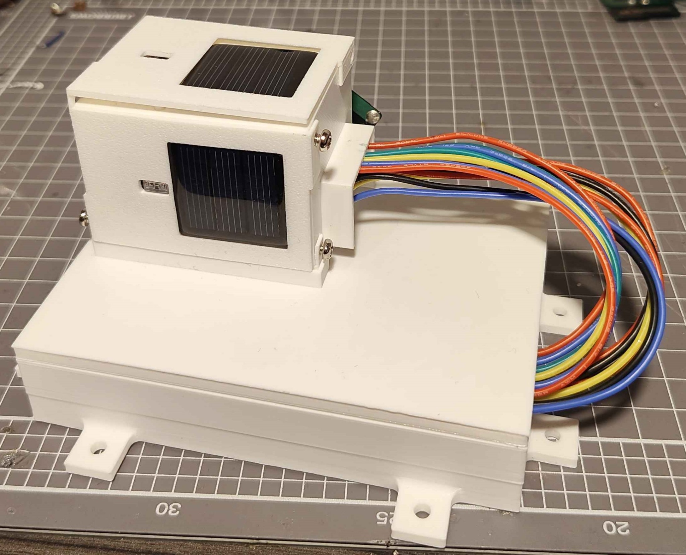
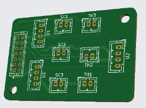
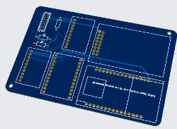
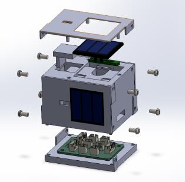
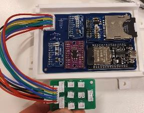
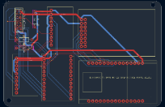
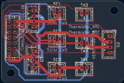
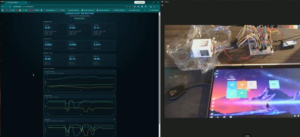

PROJECT MODULE 01
Lunar Dust Detection System
An ESP32-based lunar dust detector combining sensor electronics, custom PCBs, mechanical enclosures and a web interface.
Honours project · In development
Project overview
Developing a lunar dust detection system as my mechatronics honours project. The system uses solar cell output, thermistors, an ADS1115 ADC and SD logging.
My contribution
- Created custom footprints, symbols, schematics and PCB designs.
- Developed CAD enclosures and assembled and tested breadboard hardware.
- Wrote microcontroller code and developed an ESP32 HTTP-based webpage.
- Carried out soldering and hardware troubleshooting during prototype development.
Research and progress
The development is supported by a 42-page, approximately 19,400-word research thesis, including a literature review of previous and current lunar dust detectors.







